Implemented and verified locally · October 27, 2026
One navigation, one URL hierarchy
GolAberto uses contextual navigation on the right and a consistent resource hierarchy across all 41 page routes and all six languages. Championship views live beneath the championship; scoped teams and players follow their context; editors and creators use consistent action suffixes. Standings stay focused on tables, with last/next match previews on team-name cells.
The two-row preview now follows movement within a team-name cell with a small spacing-token offset. It flips above or left near screen edges and stays within the viewport. Hover remains pointer-transparent, so moving across covered names selects the next team. Pinning freezes the current card position and enables its match links; keyboard focus and touch retain stationary, usable previews.
First pointer position: the card starts at x 311.00, y 346.00 CSS px.After movement within the same cell: the card follows to x 332.00, y 351.00 CSS px, preserving its two aligned rows.
The browser suite moves the pointer 30 px horizontally and 5 px vertically within one cell and checks the matching card displacement. It checks stationary pinned geometry, pointer transparency through an overlapping card, row switching, keyboard focus handoff, touch navigation, aligned missing-time columns, dismissal and cleanup.
Local deployment and browser use
Web/render build and restart exited 0; both services became healthy. Native pointer movement moved the actual Athletico card, pinning enabled its links, and its played-match link opened the expected match. Bottom-edge flipping was inspected and captured. The championship table was restored and the temporary desktop viewport override was reset.
Review and simplification
Lead-only review checked hover, focused and pinned transitions, hit testing, viewport bounds and existing cleanup. No remaining actionable findings. One simplification pass kept promotion to pinned or focused mode from repositioning an already visible card. Coordinate and interaction assertions settled this bounded change without a delegated review panel.
The reader explicitly chose pointer-following behavior; the accepted compact two-row card supplies the visual oracle. No new design-tool route, model delegation or human taste decision was needed. Placement and lifecycle remain in the host-DOM hatch; all match data remains in declared screen reads. The current behavior is recorded in the IR.
October 27: shared preview columns, including missing times
The two games now share date, time, home-team, score and away-team columns. A missing kickoff leaves an empty reserved time slot. The score column uses the widest result from either row, keeping both team columns aligned between the played and scheduled game.
Before: independently sized date and score sections shifted the second fixture when its time was missing.
At a 390 px CSS viewport, the shared columns remain aligned and long names use the existing ellipsis treatment.
Verification
Check
Observed result
Sayt doctor, generate, lint and test
Each exited 0 with Sayt v0.45.0.
Full Sayt integrate
Exit 0. Replay passed in 8 seconds, visual in 148 seconds, and the browser-acceptance/database-constraint envelope in 235 seconds.
Regression coverage
The existing preview helper now compares the left and right edges of all five columns between the two rows on desktop, narrow and touch flows. An existing Vasco fixture has a known played kickoff and a missing scheduled kickoff; it verifies the empty time and its nonzero reserved width without modifying game data.
Local browser use
The imported Vasco example reproduced the original shift. After the update, all five pairs of column boundaries matched on desktop and at phone width. The empty time slot measured 36.15 CSS px in both rows. Final post-gate inspection again found matching home, score and away edges; the screenshot above was captured afterward. The temporary viewport override was reset.
Local deployment
The web/render build and restart exited 0, and both services became healthy.
Focused review and simplification
The lead reviewed shared-track sizing, empty-time retention, full-width empty messages and the existing link/group semantics. One shared CSS grid and nested subgrids replace independent row sizing. No additional delegated model or design-tool route was needed for these mechanically checked alignment rules.
The reader specified the alignment, and the accepted two-row style supplied the visual oracle. No new taste decision remained. The implementation is in the preview styles and its markup, with the shared-column contract in the IR.
October 27: two match rows, earlier side placement
The compact rows remain current. The placement and hover-click behavior captured in this section were superseded by pointer-following hover previews; pinning enables clickable links.
The preview now contains exactly two game rows: date and time, home team, score and away team. Visible team and section headings are removed; translated last/next labels remain in the accessible link names. Long names are ellipsized, and scores and shootouts stay on their game’s row.
After: both game links sit beside the name column. Atlético-MG and the other names below Cruzeiro remain clear.
Interaction
Behavior
Hover with room beside the column
The card is clickable and sits outside the entire team-name column. Moving vertically down the names switches teams directly.
Hover in a narrow viewport
The overlapping card passes pointer events through to the team cells underneath. The ⋯ button pins it and enables its links.
Pinned or keyboard-focused
The selected team stays fixed while the links are used. The button toggles pinning; Escape, outside activation, scrolling or resizing dismisses the card. Leaving keyboard focus restores normal hovering.
Narrow view shown pinned: the source button stays clear so it can close the card. Ordinary overlapping hover previews are pointer-transparent.
Verification
Check
Observed result
Sayt doctor, generation, lint and unit tests
All exited 0 with Sayt v0.45.0. Generation and lint were repeated after the final consistency pass.
Full Sayt integrate
Exit 0 after the dismissal correction. Replay passed in 9 seconds, visual in 159 seconds, and the browser-acceptance/database-constraint envelope in 265 seconds.
Final consistency pass
Manual and native dismissal now suppress re-hover only while the source is still hovered. The added keyboard-unpin regression passed through the canonical ci-acceptance target, exit 0 in 207 seconds.
Browser regression coverage
Checks two-row geometry and accessible labels; placement outside the name column; vertical pointer sweeps; movement into clickable links; focused and pinned selection; focus handoff; outside-close and keyboard-unpin reopening; actual elementFromPoint hit testing through the overlapping card and backdrop; narrow pinning; actual touch navigation; empty states; navigation cleanup and live DOM removal.
Local deployment and use
The final web/render build and restart exited 0 and both services became healthy. The actual Cruzeiro preview was inspected on desktop and at a 390 × 844 CSS viewport. Its scheduled match link opened Cruzeiro–São Paulo, and returning to the table left no orphan popup. An early native popup was also adopted as pinned when enhancement finished loading.
Final post-gate inspection
Two game links, zero visible headings, and a 600 × 74.49 px desktop card. Its left edge matched the name column’s right edge. Actual hit testing at the next row returned Atlético-MG, as expected. The final screenshot above was captured afterward, and the temporary viewport override was reset.
Review
Frontend and QA used the retained gpt-6.1-terra medium route, substituting for the skill’s older Terra identifier. Frontend identified the keyboard-focus handoff case; its regression now passes. The browser suite exposed stale dismissal after an outside click; reopening coverage verifies the correction. Both revision reviews reported no remaining actionable findings. Platform advice used gpt-6-astra high and informed native toggle handling, hit testing, score wrapping and cancellable dismissal.
The existing typography, palette and spacing supplied the accepted visual oracle, and the reader specified the two-row shape. No new design-tool route or human decision remained. One consistency pass aligned native dismissal and keyboard unpinning. The host-DOM hatch owns placement, pinning and short cancellable pointer dismissal; localized pin hints are bound in markup and all match reads remain declared there. Implementation: preview markup, interaction, styles, and screen contract.
October 27: a single place is one number
Zone labels now display 1 for a 1–1 zone and 5 for a 5–5 zone. Multi-position ranges retain their en dash. The same pure zone-position formatter serves standings legends, chances headers and zone-editing summaries.
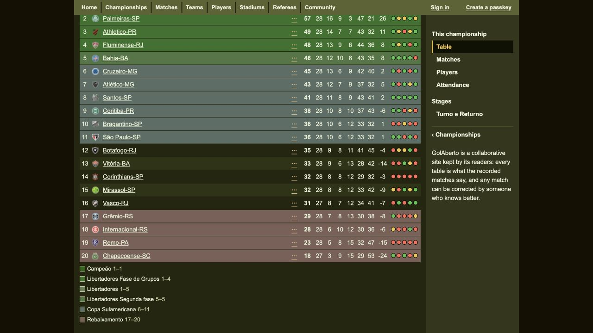
Before: the two single-position zones repeated their endpoints.After: single positions read as one number; 1–4, 1–5, 6–11 and 17–20 remain ranges.
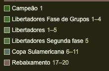
Final post-gate capture of the imported Brasileiro legend.
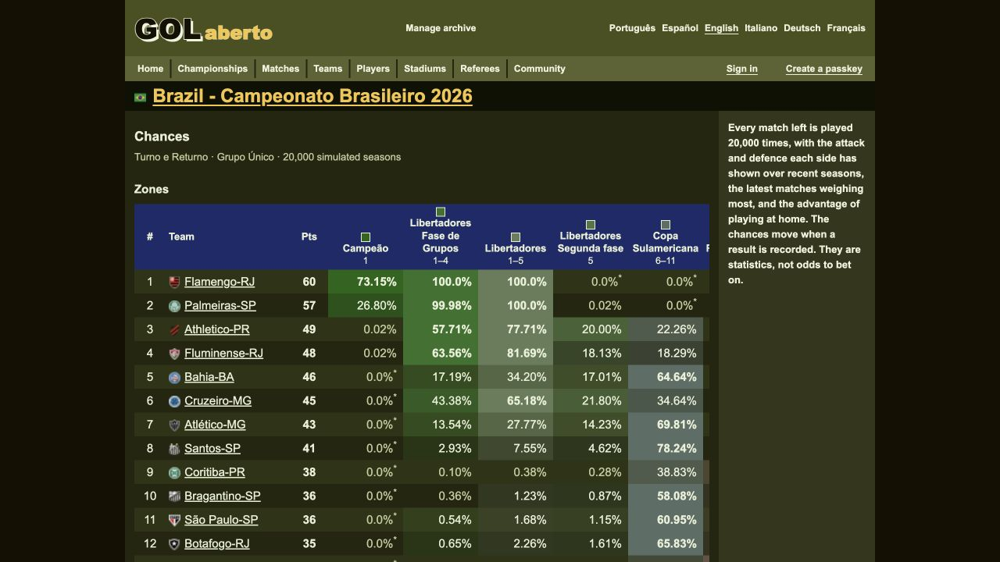
The chances table uses the same labels, including the single positions beneath Campeão and Libertadores Segunda fase.
Verification
Check
Observed result
Sayt doctor, generate, lint and test
All final commands exited 0 with Sayt v0.45.0.
Full Sayt integrate
Exit 0. Replay passed in 6 seconds, visual in 163 seconds, and the browser-acceptance/database-constraint envelope in 237 seconds.
Existing acceptance coverage
The standings and chances cases now wait for their zone labels and assert the exact sequence 1, 1–4, 5, 6–11, 17–20 from the isolated seed. These checks exercise both equality and range formatting through the actual screen bindings.
Local service and browser use
The final web/render build and restart exited 0; both services became healthy. The actual imported Brasileiro legend and its chances table both displayed 1, 1–4, 1–5, 5, 6–11, 17–20. Final inspection after integration confirmed the legend again. Browser error diagnostics were empty.
Review and simplification
The lead reviewed the three renderer registrations and their bindings, and retained one shared formatter with no additional state or CSS. Browser verification caught an incorrect first comparison approach before the final gates; that projection was removed. No actionable findings remained, and no delegated model or design-tool route was needed for this mechanical correction.
The reader's explicit formatting rule and the accepted existing styles supplied the oracle; no new visual choice or human decision remained. The contract is recorded in the IR. Zone records and scoring calculations were unchanged.
October 27: matches belong beside a team, on demand
This initial preview layout is historical. The compact two-row interaction above replaces its visible headings and placement; its championship-scoped reads and match links remain in use.
The championship table now contains phases, group standings and zone legends without current/next-round game lists. Hovering a team-name cell opens its last played match and next scheduled match in that championship. Keyboard focus opens the same card; a labelled preview button supports touch. The team-name link still opens the team's championship page.
Before: team names only navigated to team pages, while round game lists continued below the standings.
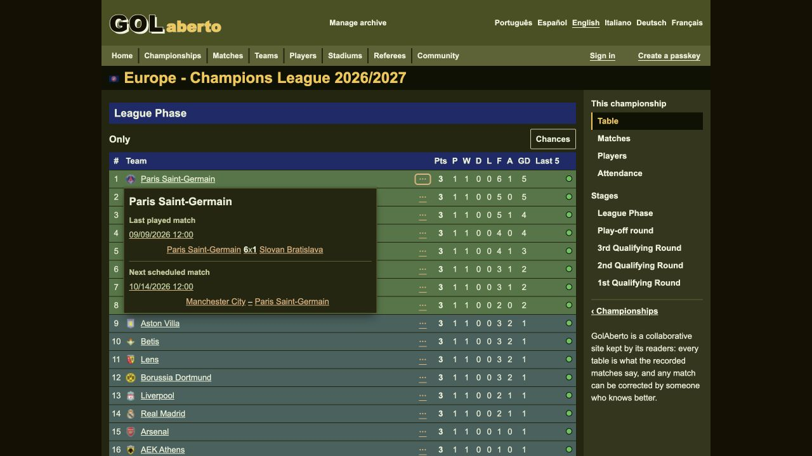
After: PSG's card shows the 6–1 result against Slovan Bratislava and the scheduled Manchester City fixture, with local dates, times and match links. The table page has no round lists.
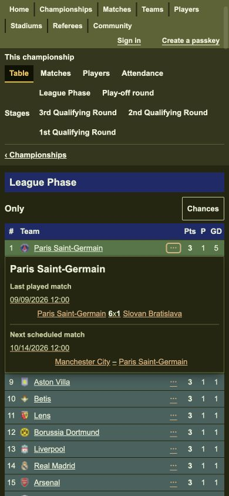
The 390 × 844 view keeps the card inside the viewport and above the table's clipping boundary. Automated touch input also opens, dismisses and follows its links.
Read and interaction contract
Each card declares two bounded TeamGame reads scoped by team and championship: the latest played match and earliest scheduled unplayed match, ordered by stored day, kickoff and game ID, each limited to one. There is no wall-clock cutoff on unplayed fixtures. Matches without a kickoff retain their civil date; known instants use the reader's timezone. Missing results or schedules have explicit translated messages. The real archive page rendered 126 team cells and 252 declared preview reads; identical reads can be shared by the terminal. The hatch performs no fetching or rendering.
The initial design used a native top-layer popover with a unique group/team CSS anchor. The compact revision above now places the popover through the host-DOM hatch, retaining unique group/team IDs and top-layer overflow escape. Its width is clamped to the viewport, and it can flip above its anchor. Pointer movement into the card keeps match links available. Escape, outside activation, scrolling, resize and navigation dismiss it. DOM removal releases the active card even when its button has already disappeared.
Verification
Check
Observed result
Sayt doctor, generate, lint and test
All final commands exited 0 with Sayt v0.45.0. Generation and lint were repeated after the review corrections.
Full Sayt integrate
Final exit 0. Replay passed in 6 seconds, visual in 137 seconds, and the browser-acceptance/database-constraint envelope in 206 seconds.
Preview acceptance
Checks exact last/next selection against SQL, absence of round lists, pointer traversal into the card, keyboard focus, Escape, outside dismissal, viewport bounds, actual touch input, match navigation and DOM teardown. A disposable team membership with no championship matches verifies both empty messages and prevents leakage from another championship.
Navigation boundary correction
The first integration run passed the new preview flow but exposed an existing fragment test that assumed every phase could scroll near the viewport top. Removing round lists makes some pages shorter. The assertion now checks the requested scroll margin clamped to the document's maximum scroll; final full integration passed.
Local deployment and browser use
Web/render build and restart exited 0; both services became healthy. The actual Champions League page was inspected on desktop and at 390 px. PSG's result, schedule, local times, match-link navigation and return to standings were exercised. Final post-gate inspection found zero round lists and a 400 × 198.5 px desktop card within the viewport. Browser warning/error diagnostics were empty.
Review and simplification
Frontend and QA used the retained gpt-6.1-terra medium route in place of the skill's older Terra identifier. Frontend identified the removed-button teardown case; QA requested explicit empty-state and touch checks. All three were fixed, and both revision reviews reported no remaining actionable findings. Platform advice used gpt-6-astra high and recommended the native-popover boundary. One simplification pass retained the small declarative fragments and removed obsolete round-list styles without adding a data or transport layer.
The reader specified the two-match hover card, and the accepted olive palette, typography and spacing supplied the existing design oracle. No new taste decision, Stitch generation or human approval remained. The native popover approach follows the platform's popover contract. Implementation: preview markup and scoped reads, host-DOM interaction, styles, and screen contract. The imported archive and calculation services remained in place; test fixture mutations ran only in the disposable integration stack.
October 27: later phases come first
The reader requested reverse phase order. Championship sections and their right-hand phase links now both use descending competition position, with descending ID as the common tiebreaker. The Libertadores page reads Semis → Quartas → Oitavas → Fase de Grupos → 3a Fase → 2a Fase → 1a Fase in both places.
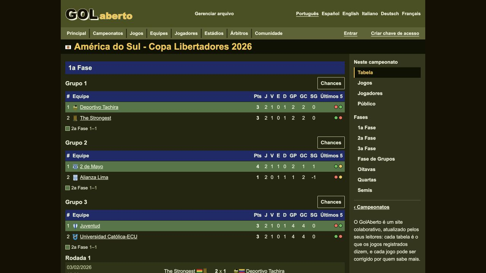
Before: opening phases appeared first.
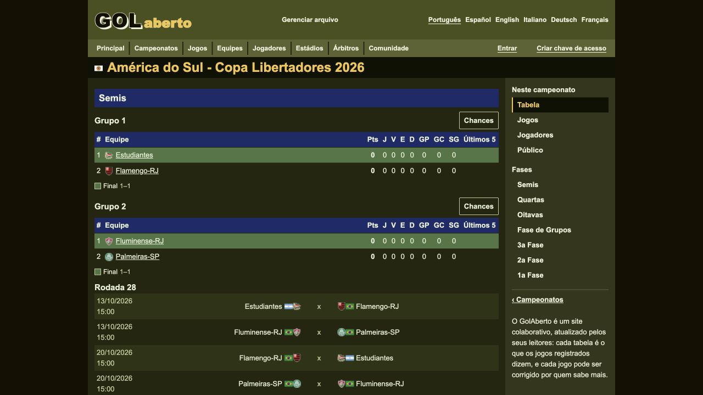
After: later phases lead the content and navigation, with the same order throughout.
Verification
Check
Observed result
Sayt doctor, generation, lint and test
All exited 0. The existing two-phase Libertadores acceptance case checks the exact reverse order of headings and phase links while retaining its empty-group checks.
Full Sayt integrate
Exit 0. Replay passed in 8 seconds, visual in 153 seconds, and the browser-acceptance/database-constraint envelope in 225 seconds.
Local deployment and browser use
Web/render build and restart exited 0. Before and after inspection recorded all seven phase headings and all seven navigation labels. Final post-gate inspection confirmed that both lists exactly reverse the previous order; the screenshot above was captured afterward.
Frontend and QA review
Both retained the available gpt-6.1-terra medium route in place of the skill's older Terra identifier. Frontend found no actionable issues. QA identified a potential timing race between the separate content and navigation reads; the test now waits for the second phase link before asserting its order. QA verified the correction with no residual findings.
The reader specified the ordering, so the accepted layout was reused without a new visual oracle or pending human decision. The simplification pass kept the two explicit read orders aligned and added no handlers or state. The implementation is in screens.cue and screens_navigation.cue; the contract and reference frames are in the IR. Stored phase positions were not changed.
October 27: one full-width group per row
The reader requested stacked groups because the side-by-side tables were cut off. The championship group grid now uses one minmax(0, 1fr) column. Each table gets the available content width while the established spacing and table overflow behavior remain in use.
Before: 362 px columns constrained tables that needed up to 437 px.After: all three first-phase groups and their tables measure 736 px wide and occupy distinct rows.
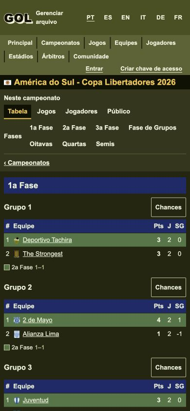
At a 390 px viewport, every group and table uses the 374 px content width. The document remains 390 px wide, with no page overflow.
Verification
Check
Observed result
Sayt doctor, generate, lint and test
Each exited 0.
Full Sayt integrate
Exit 0. Replay passed in 8 seconds, visual in 158 seconds, and the browser-acceptance/database-constraint envelope in 229 seconds.
Local deployment and browser inspection
Web/render build and restart exited 0. The Libertadores page was inspected before and after on desktop and mobile. A final post-gate inspection confirmed three separate rows, with each table and group 736 px wide.
Review and simplification
The retained frontend seat used gpt-6.1-terra medium, substituting for the skill's older Terra identifier, and reported no actionable findings. The implementation remains one changed grid declaration with no additional selectors or layout logic.
The reader specified one group per row, so no design choice or new visual oracle was needed. The implementation is in campeonato.css, with the row-width contract in the IR. No data or calculation changes were required.
October 27: championship content starts with the phases
The reader requested removal of the Continental / Profissional / Vitória 3 · Empate 1 · Derrota 0 line. The shared championship template now goes directly from its title to phase content. The unused summary styles were deleted, and the brief, reference drawings and screen contract were updated.
Before: a metadata row sat between the championship title and first phase.
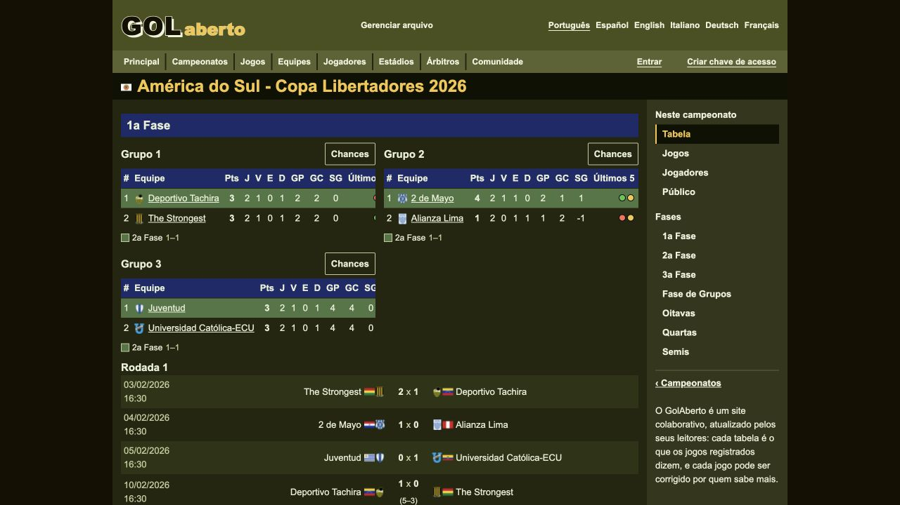
After: the first phase and standings move up into the freed space.
Verification
Check
Observed result
Sayt doctor, generation, lint and test
All final commands exited 0. The existing structure check now verifies the absence of the summary. The obsolete UI-only points-summary check was removed; the entity-level points tests are retained.
Integration
Replay and visual passed (7 and 147 seconds). Docker initially failed to start a disposable acceptance container, so acceptance and database constraints were retried separately. Both final targets exited 0 (219 and 117 seconds).
Local deployment and browser inspection
Web/render build and restart exited 0. The requested Portuguese URL was inspected before and after. Final inspection after the gates found zero summary rows and 1a Fase as the first phase. The final screenshot above was captured at that point.
Focused review and simplification
The retained frontend seat used gpt-6.1-terra at medium effort, substituting for the skill's older Terra identifier, and reported no actionable findings. The simplification pass removed orphan summary styles and the obsolete UI assertion rather than adding replacement presentation logic.
The reader specified the exact element to remove, so the existing design was reused without a new oracle or pending human decision. The authored change is in screens.cue and campeonato.css. The screen contract remains in the IR. No scoring rules or archive records were edited.
October 27: player seasons share the championship menu
The reader extended the same championship navigation to the championship/team/player page. Its old Profile/Players sidebar is replaced with the existing shared Table, Matches, Players, Attendance menu, bound to the championship slug. The full player-profile link moves into the content area as the same quiet control used elsewhere. There is no selected championship view on a scoped player page.
Before: the player season used a separate pair of links.
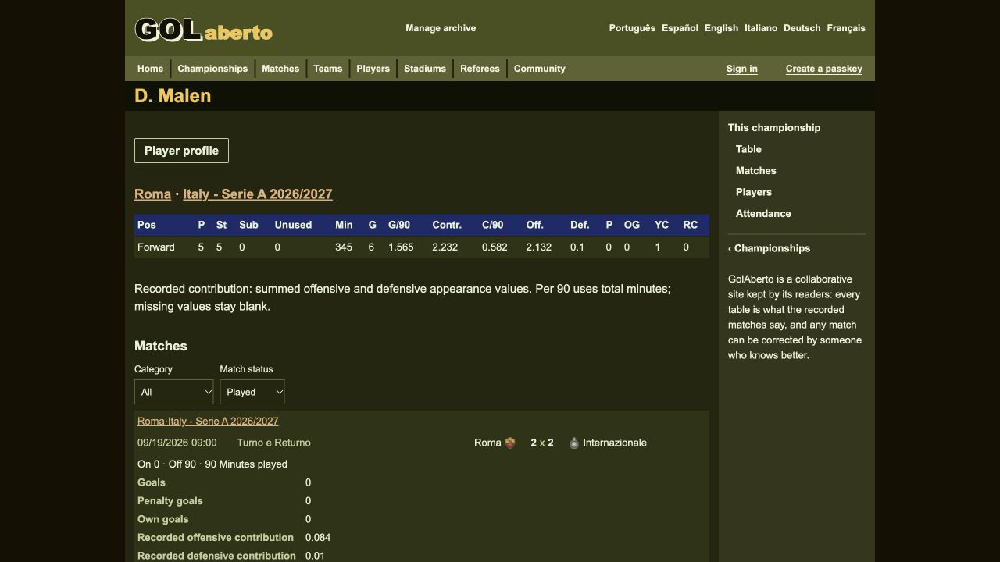
After: the same four championship links as the team season and other championship views; the full profile remains beside the player statistics.
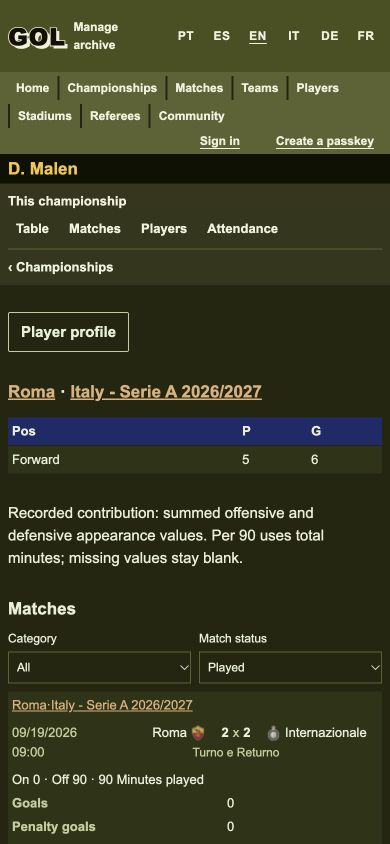
390 × 844: the menu precedes the player content and fits the viewport.
Verification for this change
Check
Observed result
Pinned Sayt doctor, generate, lint and test
Each exited 0. No new routes, catalogue labels, CSS or framework behavior were introduced.
Full Sayt integrate
Exit 0. Replay passed in 7 seconds; visual passed in 151 seconds; the browser-acceptance and database-constraint envelope passed in 232 seconds.
Browser regression coverage
The championship navigation case now opens a scoped player, checks all four exact championship URLs and no current-view marker, confirms the full-profile link, then follows Attendance. Mobile coverage traverses team → championship Players → scoped player → Matches and checks navigation above the content without horizontal overflow. Portuguese coverage traverses a scoped player back to the table while retaining lang=pt-BR.
Local build and restart
Exit 0. Caddy and renderer became healthy; only those services were replaced.
Human-style browser walkthrough
Opened D. Malen from Serie A player statistics, followed Attendance to the same championship, returned with Back, and inspected desktop and mobile layouts. The final desktop screenshot was captured after all gates passed.
Frontend and QA review
Both retained the available gpt-6.1-terra medium route, substituting for the skill's older Terra identifier. Both reported no actionable findings.
The accepted championship menu supplies the layout oracle; the reader requested reuse, so no new visual design or human decision was needed. The simplification pass kept the existing shared component and removed the separate sidebar. The contract is in the IR; the authored assembly is screens_players.cue. No database migration or archive edits were required.
October 27: teams open directly from the table
The reader removed the need for a separate championship Teams directory. Standings already link to each team's championship page, so that directory, its route, screen assets, pagination markup and diagram have been deleted. The route table now contains 41 pages. The former /en/championship/italy-serie-a-2026/teams address returns 404.
Every championship view and team-in-championship page now uses the same shared menu: Table, Matches, Players, Attendance. A team page supplies its championship parameter to these links. It does not mark one of the four championship views as current. Team switching and the team-profile link remain in the page content.
Before: the team's section menu displaced championship navigation.
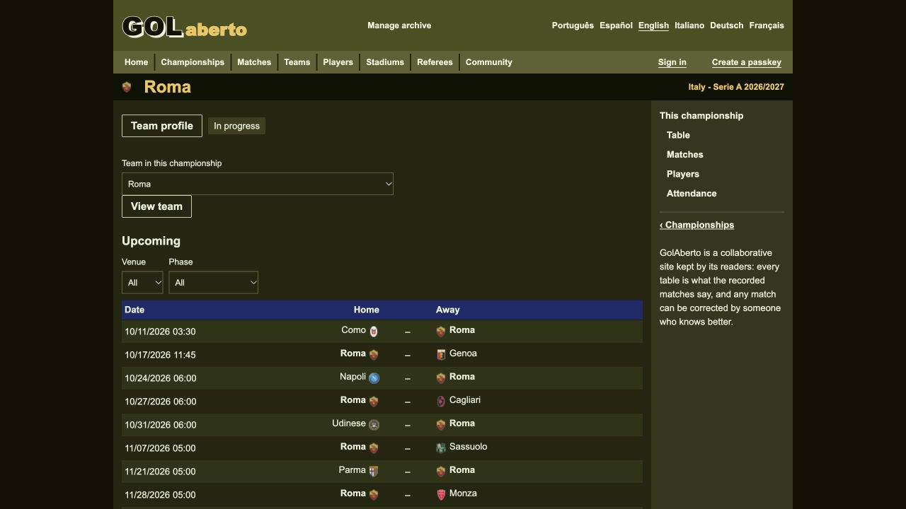
After: the same championship destinations used by the standings, matches, player statistics and attendance pages.
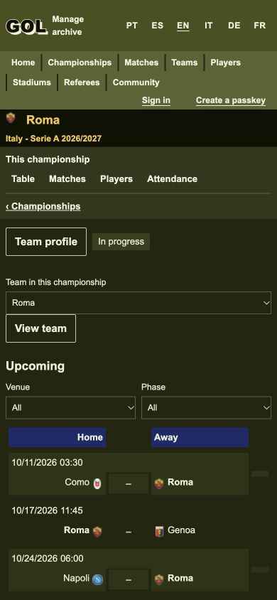
390 × 844: the shared championship menu stays before the team content.
Verification for this change
Check
Observed result
Sayt doctor and generate
Exit 0. The removed directory has no emitted route, markup or stylesheet.
Final Sayt lint and test
Both exited 0. The three route-localization tests passed, including the absence of the removed screen and hierarchy checks across all six languages.
Replay, visual and database constraints
Each final target exited 0. Replay passed in 7 seconds; visual passed in 151 seconds. An initial visual run reported missing scoped-player fixtures and a mobile Players layout shift; those findings did not reproduce on the unchanged product build.
Final browser acceptance
The isolated canonical ci-acceptance integration target exited 0 in 184 seconds. All 16 groups passed. The read-only group passed in 36 seconds, including table → team → Players, exact championship URLs, no selected championship view on a team page, removed-directory 404, mobile Matches navigation and Portuguese query preservation.
Acceptance correction
The first acceptance run timed out in the relocated generic-team section-history check and the existing timezone case. The history check now waits for the profile's populated state and uses two upper sections before asserting scroll position and Back/Forward hashes. Final acceptance, including the timezone case, passed. The product required no further change.
Local deployment and browser use
Web/render build and restart exited 0; both services became healthy. Live HTTP returned 200 for the updated team page and 404 for the removed directory. The browser walked Roma → championship Players → Table → Roma, inspected the four-item menu at desktop and phone widths, and captured the final team page after the gates passed.
Review and simplification
Frontend and QA seats used gpt-6.1-terra at medium effort, substituting for the skill's older Terra identifier. Both reported no actionable findings; QA rechecked the history-test correction with the same verdict. The lead retained the existing shared navigation component and removed the redundant screen rather than introducing another navigation layer.
The reader requested the existing championship menu, so this turn reused the accepted layout and tokens without a new design oracle. No archive records, database schema or odds calculations were changed. The four-item navigation contract is recorded in the IR; current paths are in Page routes.
October 27: nested resources throughout the site
The reader identified a mix of nested and compound page names, chose uniformity across the codebase, and explicitly removed the need for backwards compatibility. The completed contract uses plural collections, singular records, nested views, and action suffixes. The former compound routes and their redirect machinery have been removed. Discarded patterns return 404.
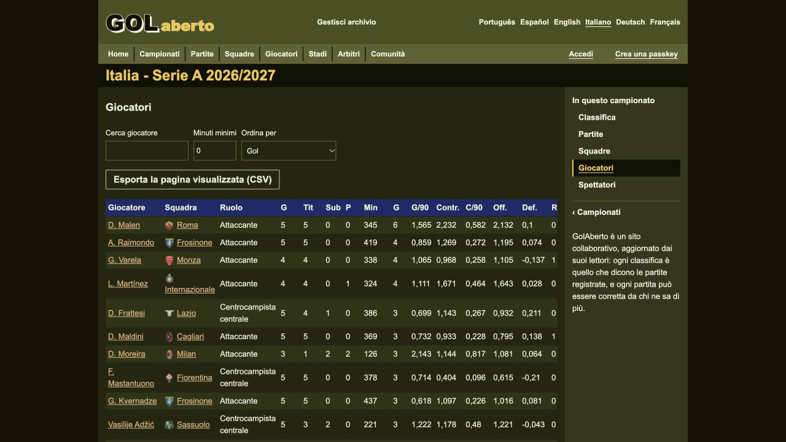
Earlier uniform-route capture: /it/campionato/italy-serie-a-2026/giocatori. Player and team links retain championship context. The five-item menu in this historical screenshot was superseded by the four-item menu shown above.
program_routes.cue is the single source for the 41 page patterns and their catalogue keys. The six catalogues translate atomic resource and action words, so the same segment is reused in directories, contextual views and editors. Screen links still address logical screen names. Generation updates navigation, language links, crawler alternates, the sitemap and the server door together. The reference is Page routes; the decision is in the IR.
The hosting review identified that a wildcard parent such as a match detail route could also consume its newly nested editor. Caddy now matches the exact segment structure, and both renderer implementations independently require a public SSR route before rendering. Nested editors receive the client entry; unknown descendants return 404. Encoded parameters, queries, optional trailing slashes and static files have regression coverage.
October 26: a place for local navigation
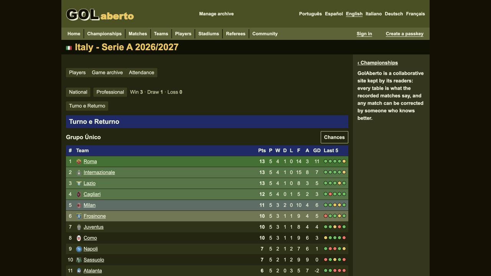
Before: Players, archive and Attendance links competed with the table; the right column held information and a back link.
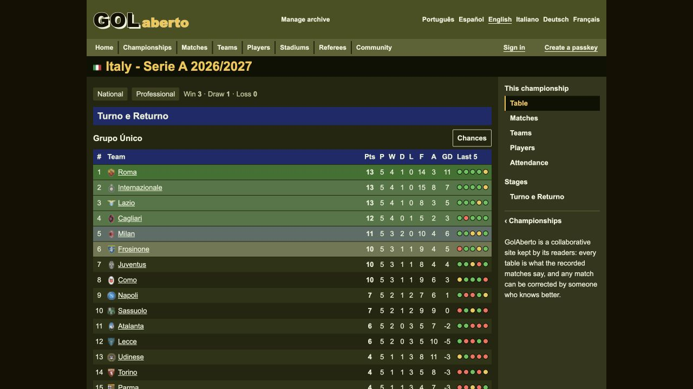
After: Table, Matches, Teams, Players and Attendance share a stable menu and current-page marker. These earlier layout captures remain visual evidence; the canonical addresses are the nested patterns above.
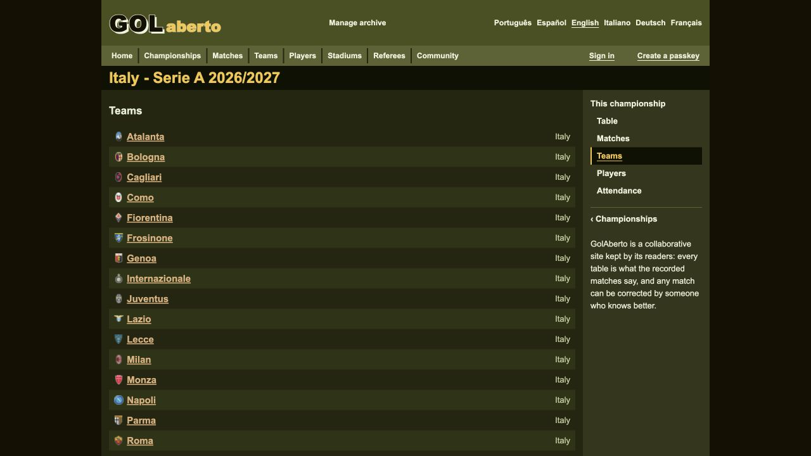
Teams shows distinct championship participation in alphabetical pages of forty, linking to each team's season. The imported Serie A championship has twenty entries.
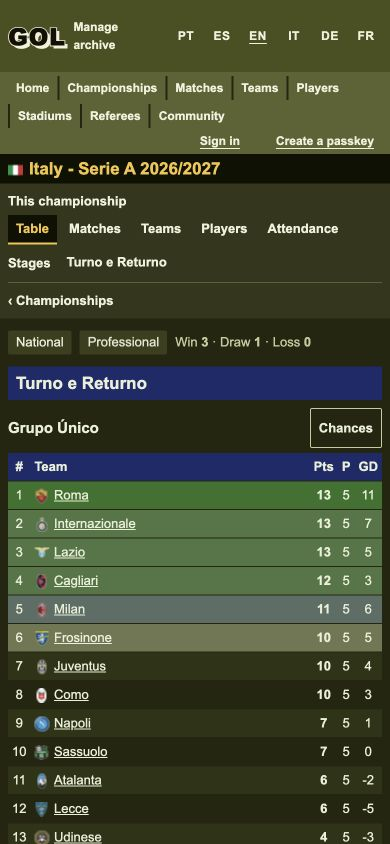
At 390 × 844, contextual links precede the long table in both visual and document order.
The reader selected the right-hand navigation direction. The existing design tokens and Stitch project 3684321283098058780, screen 55693479297947aca10f9d60f1600dbb, informed that layout; illustrative standings were not imported as data. The accepted contract is in the IR.
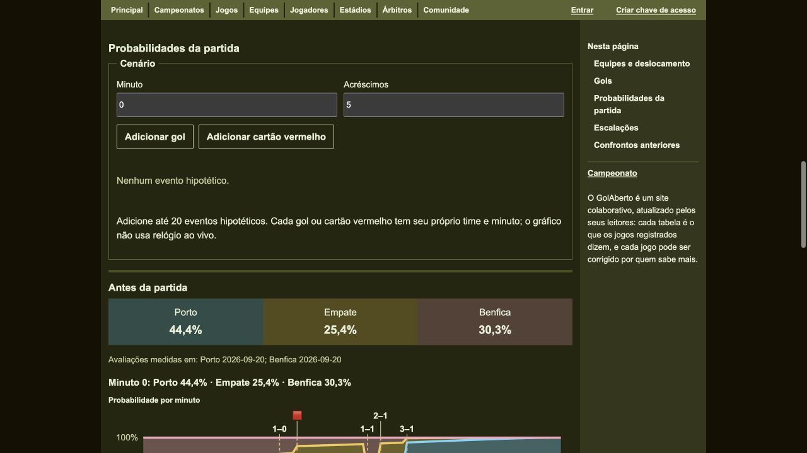
Team, player and match pages use the same rail for local sections. Copied section addresses, fresh mounts, language negotiation and browser history preserve the section; sticky headings clear the global bar.
October 27: translated addresses across all six languages
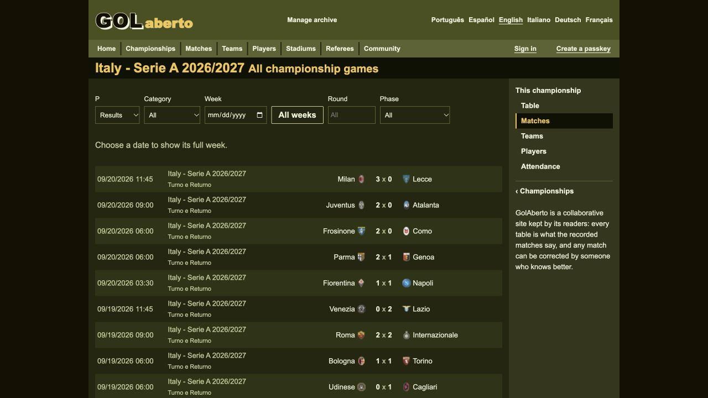
The first correction translated the championship path and its trailing view word. The later uniformity pass also changed Portuguese Matches to the shared games segment.
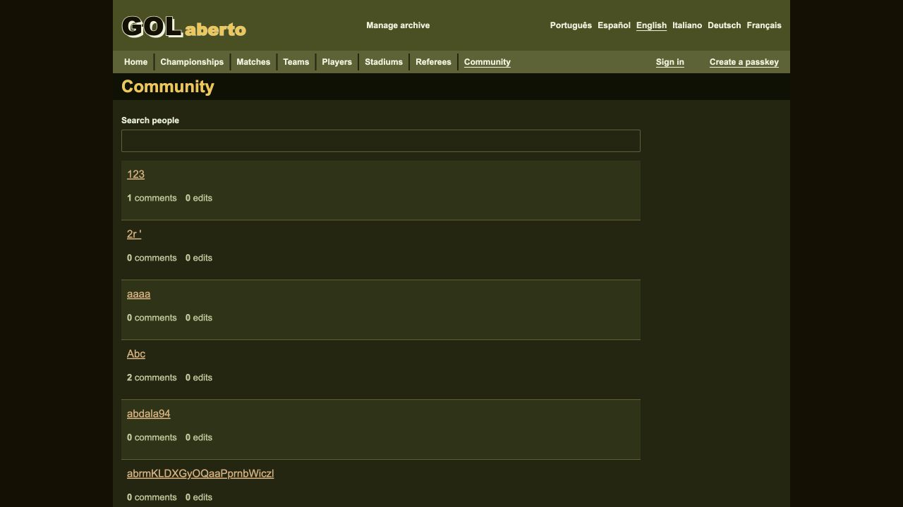
The site-wide audit extended translations to Community, profiles, archive, editors, registrations, lineups, goals and management. Community and profile IDs keep their identities when switching languages.
The initial audit found 21 additional pages without localization mappings. Every non-root route now has complete patterns in all six languages; the home route uses its language prefix. Distinct test values for each named parameter guard against swapped championship, team and player identifiers. Compatibility redirects introduced during the earlier audit were deleted in the uniformity pass at the reader's request.
Verification from the uniform-route pass
Gate or observation
Observed result
Pinned toolchain doctor
Exit 0, using Sayt v0.45.0.
Pronto generation
Exit 0. Final generated server configuration uses exact URI expressions and contains no old-address matcher.
Full Sayt lint and test
Both exited 0. Route tests cover all 41 pages, six languages, the resource hierarchy and named scoped parameters.
Compiler and SSR regressions
14 tests passed, zero failed.
Actual disposable Caddy integration
1 test passed, zero failed. Public parent SSR, client child entry, unknown-child 404, encoded separators, queries and static-file precedence verified.
Renderer regressions
11 tests and 31 steps passed, zero failures. Both request renderer and worker enforce SSR eligibility before rendering or caching.
Final full Sayt integrate
Exit 0. Replay passed in 6 seconds; visual passed in 193 seconds; the browser-acceptance and database-constraint envelope passed in 258 seconds.
Local build and restart
Exit 0. Caddy and renderer healthy. Only those two services were replaced through the archive-preserving launcher.
Live HTTP
Italian Players and Attendance returned 200 with SSR. The former Italian compound Players path returned 404. English full-match and score editors returned 200 with client entry and no editor SSR.
Human-style browser walkthrough
Italian Players loaded populated statistics. Clicking Attendance, switching to English and returning to Italian preserved the championship and section; returning to Players selected its menu item. The final screenshot above was inspected.
The imported archive and calculation services stayed running. A missing local PostgREST aggregate-query setting prevented player statistics from loading; the existing read-parity migration already specifies it. Restoring that role setting and reloading PostgREST made the page load. No archive records were modified. Integration ran against disposable stacks.
Review, simplification and delivery
The Pronto turn workflow guided the work. QA used gpt-6.1-terra at medium effort, substituting for the skill's unavailable older Terra identifier. The platform advisory used gpt-6-astra at high effort; the frontend implementation/review used gpt-6.1-terra at high effort. The platform's confirmed parent-route crossover was fixed and rechecked with no residual actionable findings. QA's outdated-journal finding is resolved by this rewrite: obsolete compatibility claims and the deleted source-file link are gone.
The simplification pass centralized all routes and reused atomic catalogue words instead of adding another address layer. The current change concerns URL architecture, with no new layout or taste decision requiring a design oracle. The reader selected a uniform pattern and removal of compatibility; no human decision remains.
This is deployed locally using the monorepo Pronto and Omnishell sources. Standalone release pins need matching framework releases for translated segments and section navigation before a standalone app release. No framework release, commit or remote publication was made by this turn.